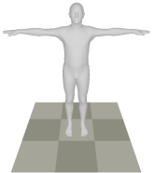
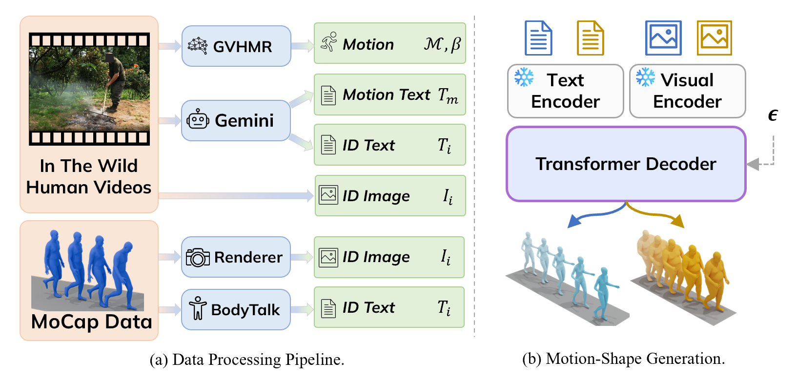

Motion Prompt:
"a person throws something with their right hand hard"
Identity Prompt:

"a male with a lean, athletic build"
Recent advances in text-driven human motion generation enable models to synthesize realistic motion sequences from natural language descriptions. However, most existing approaches assume identity-neutral motion and generate movements using a canonical body representation, ignoring the strong influence of body morphology on motion dynamics. In practice, attributes such as body proportions, mass distribution, and age significantly affect how actions are performed, and neglecting this coupling often leads to physically inconsistent motions.
We propose an identity-aware motion generation framework that explicitly models the relationship between body morphology and motion dynamics. Instead of relying on explicit geometric measurements, identity is represented using multimodal signals, including natural language descriptions and visual cues. We further introduce a joint motion-shape generation paradigm that simultaneously synthesizes motion sequences and body shape parameters, allowing identity cues to directly modulate motion dynamics.
Extensive experiments on motion capture datasets and large-scale in-the-wild videos demonstrate improved motion realism and motion-identity consistency while maintaining high motion quality.

(a) Data Processing Pipeline: We extract motion sequences M, shape parameters beta,
and multimodal identity descriptions (Ti, Ii) from diverse sources (in-the-wild
videos or MoCap data).
(b) Motion-Shape Generation: A multimodal identity conditioning
framework integrates textual and visual priors through frozen encoders to jointly generate
identity-consistent motion sequences and body shapes via a diffusion model.
We compare IAM (Diffusion) with VQ-based IAM and Shape My Moves. Each case keeps the same motion prompt and identity prompt across methods.
Side-by-side comparison between Shape My Moves and IAM on unseen identities. Identity conditioning follows the paper: each example uses a text identity description together with a reference image (identity keyframe from the source video).
Given the same motion prompt, IAM generates diverse identity-consistent motions for different body types.
"A person hesitantly walks across a wobbly rope bridge at an outdoor adventure park, holding onto the overhead safety harness for balance."
Young adult female, slender build
Young adult male, slender build
Muscular adult male
Older adult female, heavy-set build
Older adult male, overweight build
"A person performs a cheerful dance on a white background, swaying their hips and moving their arms."
Young adult female, slender build
Young adult male, slender build
Muscular adult male
Older adult female, heavy-set build
Older adult male, overweight build
"A person walks forward holding bricks with both hands."
Young adult female, slender build
Young adult male, slender build
Muscular adult male
Older adult female, heavy-set build
Older adult male, overweight build
@article{jia2026iam,
author = {Jia, Wenqi and Li, Zekun and Mittal, Abhay and Tang, Chengcheng and Guo, Chuan and Wang, Lezi and Rehg, James M. and Tao, Lingling and An, Sizhe},
title = {IAM: Identity-Aware Human Motion and Shape Joint Generation},
journal = {arXiv preprint},
year = {2026},
}